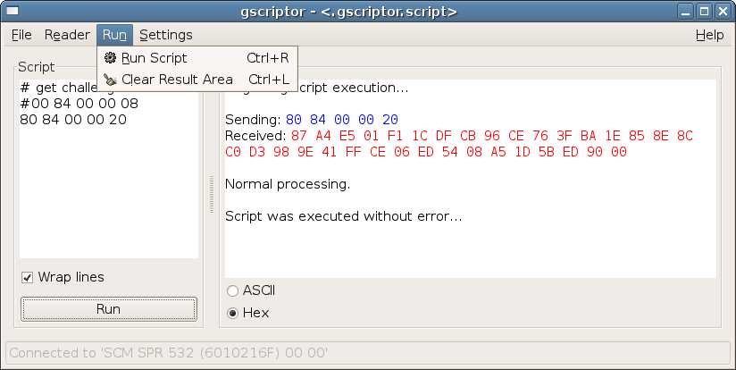

page for pcsc-tools.
page for pcsc-tools.These tools are used to test a PC/SC driver, card or reader or send commands in a friendly environment (text or graphical user interface).
pcsc_scan(1) regularly scans every PC/SC reader connected to the host if a card is inserted or removed a "line" is printed.
PC/SC device scanner V 1.4.9 (c) 2001-2006, Ludovic Rousseau <ludovic.rousseau@free.fr> Compiled with PC/SC lite version: 1.3.1 Scanning present readers Waiting for the first reader...found one Scanning present readers 0: GemPC430 00 00 Tue Mar 7 21:23:48 2006 Reader 0: GemPC430 00 00 Card state: Card removed, Tue Mar 7 21:24:01 2006 Reader 0: GemPC430 00 00 Card state: Card inserted, ATR: 3B FA 13 00 FF 81 31 80 45 00 31 C1 73 C0 01 00 00 90 00 B1 ATR: 3B FA 13 00 FF 81 31 80 45 00 31 C1 73 C0 01 00 00 90 00 B1 + TS = 3B --> Direct Convention + T0 = FA, Y(1): 1111, K: 10 (historical bytes) TA(1) = 13 --> Fi=372, Di=4, 93 cycles/ETU 43010 bits/s at 4 MHz, fMax for Fi = 5 MHz => 53763 bits/s TB(1) = 00 --> VPP is not electrically connected TC(1) = FF --> Extra guard time: 255 (special value) TD(1) = 81 --> Y(i+1) = 1000, Protocol T = 1 ----- TD(2) = 31 --> Y(i+1) = 0011, Protocol T = 1 ----- TA(3) = 80 --> IFSC: 128 TB(3) = 45 --> Block Waiting Integer: 4 - Character Waiting Integer: 5 + Historical bytes: 00 31 C1 73 C0 01 00 00 90 00 Category indicator byte: 00 (compact TLV data object) Tag: 3, len: 1 (card service data byte) Card service data byte: C1 - Application selection: by full DF name - Application selection: by partial DF name - EF.DIR and EF.ATR access services: by GET RECORD(s) command - Card without MF Tag: 7, len: 3 (card capabilities) Selection methods: C0 - DF selection by full DF name - DF selection by partial DF name Data coding byte: 01 - Behaviour of write functions: one-time write - Value 'FF' for the first byte of BER-TLV tag fields: invalid - Data unit in quartets: 2 Command chaining, length fields and logical channels: 00 - Logical channel number assignment: No logical channel - Maximum number of logical channels: 1 Mandatory status indicator (3 last bytes) LCS (life card cycle): 00 (No information given) SW: 9000 (Normal processing.) + TCK = B1 (correct checksum) Possibly identified card (using /usr/lib/pcsc/smartcard_list.txt): 3B FA 13 00 FF 81 31 80 45 00 31 C1 73 C0 01 00 00 90 00 B1 OpenPGP Tue Mar 7 21:24:08 2006 Reader 0: GemPC430 00 00 Card state: Card removed, Tue Mar 7 21:24:18 2006 Reader 0: GemPC430 00 00 Card state: Status unavailable, Scanning present readers Waiting for the first reader...
ATR_analysis(1) is a Perl script used to parse the smart card ATR. This script is called (by default) by pcsc_scan.
This code was originally written by Christophe in August 2000 for a Perl wrapper using "TLP driver" (and not PC/SC) to access the smartcard.
The smartcard_list.txt list contains ATR of some cards. The list is used by ATR_analysis to find a card model corresponding to the ATR. I took the initial list from SCEZ by Matthias Bruestle.
Please send me (ludovic.rousseau@free.fr) any ATR and card description not included in the list.
scriptor(1) is a Perl script to send commands to a smart card using a batch file or stdin.
$ scriptor No reader given: using GemPC Twin 0 0 Using T=0 protocol Reading commands from STDIN reset > RESET < OK: 3B A7 00 40 18 80 65 A2 08 01 01 52 00 A4 00 00 02 3F 00 > 00 A4 00 00 02 3F 00 < 61 12 : 0x12 bytes of response still available. 00 C0 00 00 12 > 00 C0 00 00 12 < 85 10 80 01 3F 00 38 00 00 00 01 00 01 00 00 00 00 6B 90 00 : Normal processing.
the same idea as scriptor.pl(1) but with a Perl-Gtk2 GUI.

pcsc-tools
Copyright (C) 2001-2008 Lionel VICTOR, Ludovic ROUSSEAU
This program is free software; you can redistribute it and/or modify it under the terms of the GNU General Public License as published by the Free Software Foundation; either version 2 of the License, or (at your option) any later version.
This program is distributed in the hope that it will be useful, but WITHOUT ANY WARRANTY; without even the implied warranty of MERCHANTABILITY or FITNESS FOR A PARTICULAR PURPOSE. See the GNU General Public License for more details.
You should have received a copy of the GNU General Public License along with this program; if not, write to the Free Software Foundation, Inc., 59 Temple Place, Suite 330, Boston, MA 02111-1307 USA
See also the page for pcsc-tools.
The SpringCard compagny provides a Windows binary installer for gScriptor (a forked version of gscriptor).
SpringCard also provides some other nice free software tools to send APDU commands to a card on Windows.
since 13/09/2001.
Ludovic Rousseau, (c) 30 may 2001, last update 13 September 2008.